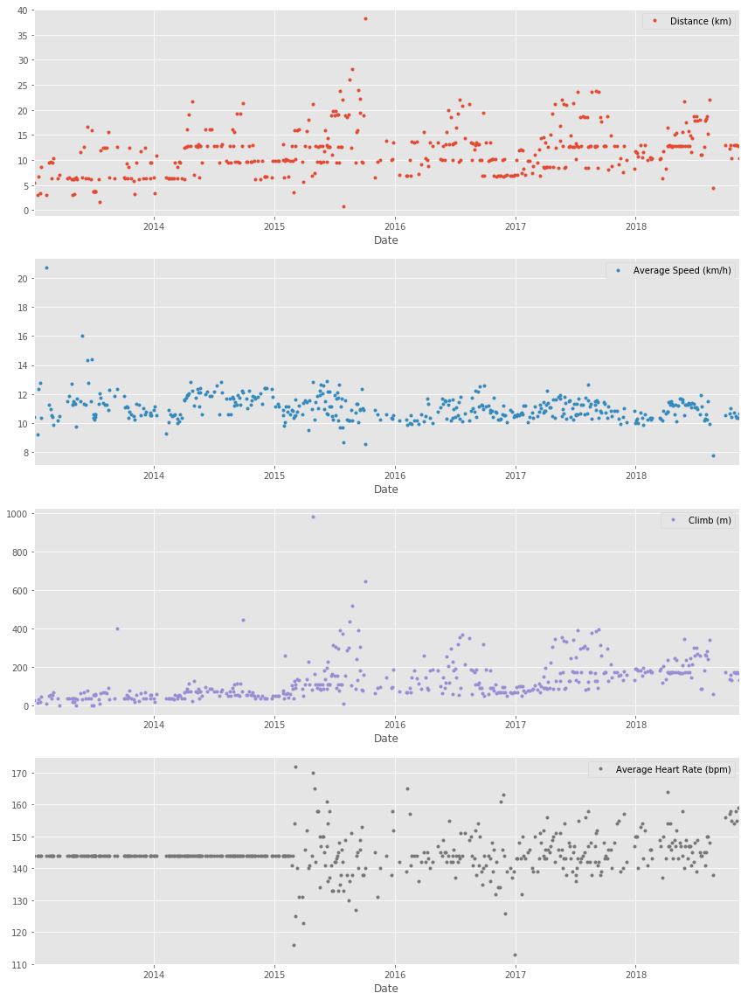
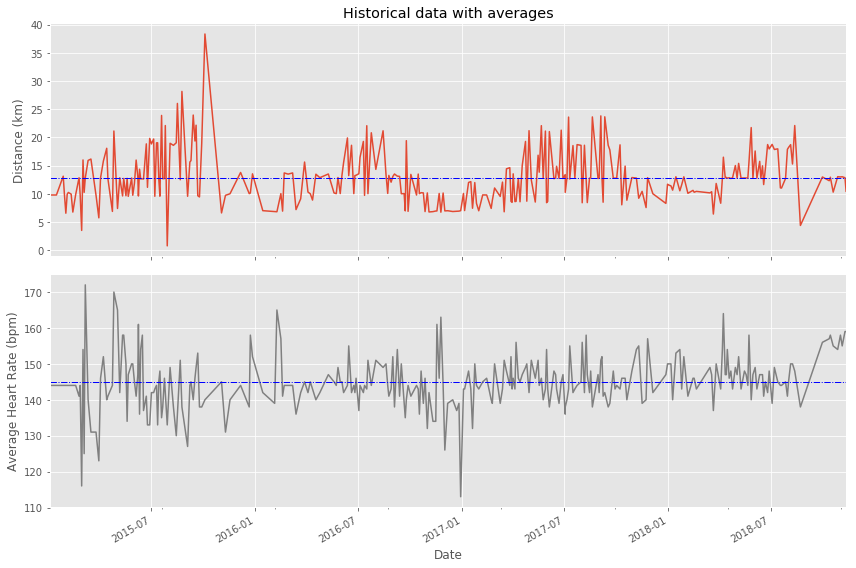

One day, my old running friend and I were chatting about our running styles, training habits, and achievements, when I suddenly realized that I could take an in-depth analytical look at my training. I have been using a popular GPS fitness tracker called Runkeeper for years and decided it was time to analyze my running data to see how I was doing.
Since 2012, I’ve been using the Runkeeper app, and it’s great. One key feature: its excellent data export. Anyone who has a smartphone can download the app and analyze their data like we will in this notebook.
After logging your run, the first step is to export the data from Runkeeper (which I’ve done already). Then import the data and start exploring to find potential problems. After that, create data cleaning strategies to fix the issues. Finally, analyze and visualize the clean time-series data.
I exported seven years worth of my training data, from 2012 through 2018. The data is a CSV file where each row is a single training activity. Let’s load and inspect it.
# Import pandasimport pandas as pd# Define file containing datasetrunkeeper_file ='datasets/cardioActivities.csv'# Create DataFrame with parse_dates and index_col parameters df_activities = pd.read_csv(runkeeper_file,parse_dates=True,index_col='Date')# First look at exported data: select sample of 3 random rows display(df_activities.sample(n=3))# Print DataFrame summarydf_activities.info()
Activity Id
Type
Route Name
Distance (km)
Duration
Average Pace
Average Speed (km/h)
Calories Burned
Climb (m)
Average Heart Rate (bpm)
Friend's Tagged
Notes
GPX File
Date
2016-02-15 18:37:04
c41ee42c-c911-4367-8594-e86cffbec427
Running
NaN
10.02
1:00:08
6:00
10.00
703.0
92
157.0
NaN
TomTom MySports Watch
2016-02-15-183704.gpx
2017-07-19 18:50:31
ebe894be-7567-4b56-91ab-164554e20357
Running
NaN
12.80
1:08:04
5:19
11.28
891.0
170
143.0
NaN
TomTom MySports Watch
2017-07-19-185031.gpx
2014-09-15 18:30:00
a2306eac-c313-4abd-a653-e62bb74f9e3b
Running
NaN
9.55
48:54
5:07
11.72
684.0
51
NaN
NaN
NaN
2014-09-15-183000.gpx
<class 'pandas.core.frame.DataFrame'>
DatetimeIndex: 508 entries, 2018-11-11 14:05:12 to 2012-08-22 18:53:54
Data columns (total 13 columns):
Activity Id 508 non-null object
Type 508 non-null object
Route Name 1 non-null object
Distance (km) 508 non-null float64
Duration 508 non-null object
Average Pace 508 non-null object
Average Speed (km/h) 508 non-null float64
Calories Burned 508 non-null float64
Climb (m) 508 non-null int64
Average Heart Rate (bpm) 294 non-null float64
Friend's Tagged 0 non-null float64
Notes 231 non-null object
GPX File 504 non-null object
dtypes: float64(5), int64(1), object(7)
memory usage: 55.6+ KB
2. Data preprocessing
Lucky for us, the column names Runkeeper provides are informative, and we don’t need to rename any columns.
But, we do notice missing values using the info() method. What are the reasons for these missing values? It depends. Some heart rate information is missing because I didn’t always use a cardio sensor. In the case of the Notes column, it is an optional field that I sometimes left blank. Also, I only used the Route Name column once, and never used the Friend’s Tagged column.
We’ll fill in missing values in the heart rate column to avoid misleading results later, but right now, our first data preprocessing steps will be to:
Remove columns not useful for our analysis.
Replace the “Other” activity type to “Unicycling” because that was always the “Other” activity.
Count missing values.
# Define list of columns to be deletedcols_to_drop = ['Friend\'s Tagged','Route Name','GPX File','Activity Id','Calories Burned', 'Notes']# Delete unnecessary columnsdf_activities.drop(columns=cols_to_drop,inplace=True)# Count types of training activitiesdisplay(df_activities.Type.value_counts())# Rename 'Other' type to 'Unicycling'df_activities['Type'] = df_activities['Type'].replace('Other','Unicycling')# Count missing values for each columndf_activities.isnull().sum()
Type 0
Distance (km) 0
Duration 0
Average Pace 0
Average Speed (km/h) 0
Climb (m) 0
Average Heart Rate (bpm) 214
dtype: int64
3. Dealing with missing values
As we can see from the last output, there are 214 missing entries for my average heart rate.
We can’t go back in time to get those data, but we can fill in the missing values with an average value. This process is called mean imputation. When imputing the mean to fill in missing data, we need to consider that the average heart rate varies for different activities (e.g., walking vs. running). We’ll filter the DataFrames by activity type (Type) and calculate each activity’s mean heart rate, then fill in the missing values with those means.
# Calculate sample means for heart rate for each training activity type avg_hr_run = df_activities[df_activities['Type'] =='Running']['Average Heart Rate (bpm)'].mean()avg_hr_cycle = df_activities[df_activities['Type'] =='Cycling']['Average Heart Rate (bpm)'].mean()# Split whole DataFrame into several, specific for different activitiesdf_run = df_activities[df_activities['Type'] =='Running'].copy()df_walk = df_activities[df_activities['Type'] =='Walking'].copy()df_cycle = df_activities[df_activities['Type'] =='Cycling'].copy()# Filling missing values with counted means df_walk['Average Heart Rate (bpm)'].fillna(110, inplace=True)df_run['Average Heart Rate (bpm)'].fillna(int(avg_hr_run), inplace=True)df_cycle['Average Heart Rate (bpm)'].fillna(int(avg_hr_cycle), inplace=True)# Count missing values for each column in running datadf_run.isnull().sum()
Type 0
Distance (km) 0
Duration 0
Average Pace 0
Average Speed (km/h) 0
Climb (m) 0
Average Heart Rate (bpm) 0
dtype: int64
4. Plot running data
Now we can create our first plot! As we found earlier, most of the activities in my data were running (459 of them to be exact). There are only 29, 18, and two instances for cycling, walking, and unicycling, respectively. So for now, let’s focus on plotting the different running metrics.
An excellent first visualization is a figure with four subplots, one for each running metric (each numerical column). Each subplot will have a different y-axis, which is explained in each legend. The x-axis, Date, is shared among all subplots.
%matplotlib inline# Import matplotlib, set style and ignore warningimport matplotlib.pyplot as plt%matplotlib inlineimport warningsplt.style.use('ggplot')warnings.filterwarnings( action='ignore', module='matplotlib.figure', category=UserWarning, message=('This figure includes Axes that are not compatible with tight_layout, so results might be incorrect.'))# Prepare data subsetting period from 2013 till 2018runs_subset_2013_2018 = df_run['2019-01-01':'2013-01-01']# Create, plot and customize in one stepruns_subset_2013_2018.plot(subplots=True, sharex=False, figsize=(12,16), linestyle='none', marker='o', markersize=3, )# Show plotplt.show()

5. Running statistics
No doubt, running helps people stay mentally and physically healthy and productive at any age. And it is great fun! When runners talk to each other about their hobby, we not only discuss our results, but we also discuss different training strategies.
You’ll know you’re with a group of runners if you commonly hear questions like:
What is your average distance?
How fast do you run?
Do you measure your heart rate?
How often do you train?
Let’s find the answers to these questions in my data. If you look back at plots in Task 4, you can see the answer to, Do you measure your heart rate? Before 2015: no. To look at the averages, let’s only use the data from 2015 through 2018.
In pandas, the resample() method is similar to the groupby() method - with resample() you group by a specific time span. We’ll use resample() to group the time series data by a sampling period and apply several methods to each sampling period. In our case, we’ll resample annually and weekly.
# Prepare running data for the last 4 yearsruns_subset_2015_2018 = df_run['2019-01-01':'2015-01-01']# Calculate annual statisticsprint('How my average run looks in last 4 years:')display(runs_subset_2015_2018.resample('A').mean())# Calculate weekly statisticsprint('Weekly averages of last 4 years:')display(runs_subset_2015_2018.resample('W').mean().mean())# Mean weekly countsweekly_counts_average = runs_subset_2015_2018['Distance (km)'].resample('W').count().mean()print('How many trainings per week I had on average:', weekly_counts_average)
How my average run looks in last 4 years:
Distance (km)
Average Speed (km/h)
Climb (m)
Average Heart Rate (bpm)
Date
2015-12-31
13.602805
10.998902
160.170732
143.353659
2016-12-31
11.411667
10.837778
133.194444
143.388889
2017-12-31
12.935176
10.959059
169.376471
145.247059
2018-12-31
13.339063
10.777969
191.218750
148.125000
Weekly averages of last 4 years:
Distance (km) 12.518176
Average Speed (km/h) 10.835473
Climb (m) 158.325444
Average Heart Rate (bpm) 144.801775
dtype: float64
How many trainings per week I had on average: 1.5
6. Visualization with averages
Let’s plot the long term averages of my distance run and my heart rate with their raw data to visually compare the averages to each training session. Again, we’ll use the data from 2015 through 2018.
In this task, we will use matplotlib functionality for plot creation and customization.
# Prepare dataruns_subset_2015_2018 = df_run['2018':'2015']runs_distance = runs_subset_2015_2018['Distance (km)']runs_hr = runs_subset_2015_2018['Average Heart Rate (bpm)']# Create plotfig, (ax1, ax2) = plt.subplots(2,sharex=True,figsize=(12,8))# Plot and customize first subplotruns_distance.plot(ax=ax1)ax1.set(ylabel='Distance (km)', title='Historical data with averages')ax1.axhline(runs_distance.mean(), color='blue', linewidth=1, linestyle='-.')# Plot and customize second subplotruns_hr.plot(ax=ax2, color='gray')ax2.set(xlabel='Date', ylabel='Average Heart Rate (bpm)')ax2.axhline(runs_hr.mean(),color='blue',linewidth=1,linestyle='-.')# Show plotplt.show()

7. Did I reach my goals?
To motivate myself to run regularly, I set a target goal of running 1000 km per year. Let’s visualize my annual running distance (km) from 2013 through 2018 to see if I reached my goal each year. Only stars in the green region indicate success.
Let’s dive a little deeper into the data to answer a tricky question: am I progressing in terms of my running skills?
To answer this question, we’ll decompose my weekly distance run and visually compare it to the raw data. A red trend line will represent the weekly distance run.
We are going to use statsmodels library to decompose the weekly trend.
Heart rate is a popular metric used to measure training intensity. Depending on age and fitness level, heart rates are grouped into different zones that people can target depending on training goals. A target heart rate during moderate-intensity activities is about 50-70% of maximum heart rate, while during vigorous physical activity it’s about 70-85% of maximum.
We’ll create a distribution plot of my heart rate data by training intensity. It will be a visual presentation for the number of activities from predefined training zones.
With all this data cleaning, analysis, and visualization, let’s create detailed summary tables of my training.
To do this, we’ll create two tables. The first table will be a summary of the distance (km) and climb (m) variables for each training activity. The second table will list the summary statistics for the average speed (km/hr), climb (m), and distance (km) variables for each training activity.
# Concatenating three DataFramesdf_run_walk_cycle = df_run.append([df_walk,df_cycle]).sort_index(ascending=False)dist_climb_cols, speed_col = ['Distance (km)', 'Climb (m)'], ['Average Speed (km/h)']# Calculating total distance and climb in each type of activitiesdf_totals = df_run_walk_cycle.groupby('Type')[dist_climb_cols].sum()print('Totals for different training types:')display(df_totals)# Calculating summary statistics for each type of activities df_summary = df_run_walk_cycle.groupby('Type')[dist_climb_cols + speed_col].describe()# Combine totals with summaryfor i in dist_climb_cols: df_summary[i, 'total'] = df_totals[i]print('Summary statistics for different training types:')df_summary.stack()
Totals for different training types:
Distance (km)
Climb (m)
Type
Cycling
680.58
6976
Running
5224.50
57278
Walking
33.45
349
Summary statistics for different training types:
Average Speed (km/h)
Climb (m)
Distance (km)
Type
Cycling
25%
16.980000
139.000000
15.530000
50%
19.500000
199.000000
20.300000
75%
21.490000
318.000000
29.400000
count
29.000000
29.000000
29.000000
max
24.330000
553.000000
49.180000
mean
19.125172
240.551724
23.468276
min
11.380000
58.000000
11.410000
std
3.257100
128.960289
9.451040
total
NaN
6976.000000
680.580000
Running
25%
10.495000
54.000000
7.415000
50%
10.980000
91.000000
10.810000
75%
11.520000
171.000000
13.190000
count
459.000000
459.000000
459.000000
max
20.720000
982.000000
38.320000
mean
11.056296
124.788671
11.382353
min
5.770000
0.000000
0.760000
std
0.953273
103.382177
4.937853
total
NaN
57278.000000
5224.500000
Walking
25%
5.555000
7.000000
1.385000
50%
5.970000
10.000000
1.485000
75%
6.512500
15.500000
1.787500
count
18.000000
18.000000
18.000000
max
6.910000
112.000000
4.290000
mean
5.549444
19.388889
1.858333
min
1.040000
5.000000
1.220000
std
1.459309
27.110100
0.880055
total
NaN
349.000000
33.450000
11. Fun facts
To wrap up, let’s pick some fun facts out of the summary tables and solve the last exercise.
These data (my running history) represent 6 years, 2 months and 21 days. And I remember how many running shoes I went through–7.
FUN FACTS
- Average distance: 11.38 km
- Longest distance: 38.32 km
- Highest climb: 982 m
- Total climb: 57,278 m
- Total number of km run: 5,224 km
- Total runs: 459
- Number of running shoes gone through: 7 pairs
The story of Forrest Gump is well known–the man, who for no particular reason decided to go for a “little run.” His epic run duration was 3 years, 2 months and 14 days (1169 days). In the picture you can see Forrest’s route of 24,700 km.
FORREST RUN FACTS
- Average distance: 21.13 km
- Total number of km run: 24,700 km
- Total runs: 1169
- Number of running shoes gone through: ...
Assuming Forest and I go through running shoes at the same rate, figure out how many pairs of shoes Forrest needed for his run.
# Count average shoes per lifetime (as km per pair) using our fun factsaverage_shoes_lifetime = (100/6)*7# Count number of shoes for Forrest's run distanceshoes_for_forrest_run =round((7/11.38)*21.13)print('Forrest Gump would need {} pairs of shoes!'.format(shoes_for_forrest_run))